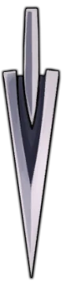
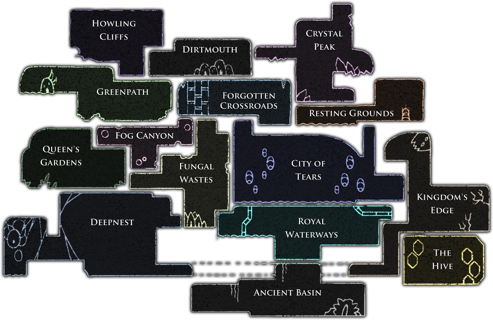

Gameplay
Here is the table of the control elements for PC:
| Name | Use | Buttons |
|---|---|---|
| JUMP | Jump, bounce off walls with Mantis Claw, activate Monarch Wings while in mid-air | Z |
| ATTACK | Attack with the Nail, hold to charge Nail Arts | X |
| FOCUS / CAST | Cast Spells, hold to use Focus | A |
| DREAM NAIL | Hold to use Dream Nail or Dreamgate | D |
| QUICK CAST | Cast Spells | F |
| DASH | Use Mothwing Cloak or Shade Cloak | C |
| PAUSE | Pause the game to access menu options | Esc |
| INVENTORY | Open the last viewed menu page (Inventory, Map, Hunter's Journal, or Charms) | I |
| SUPER DASH | Hold to use the Crystal Heart | S |
| QUICK MAP | Hold to view Area map, double-tap to view full Map | Tab |
| LOOK UP / DOWN | Hold to view the area above or below the current field of view | ↑ / ↓ |
The player controls an insectoid, silent protagonist called "the Knight" who explores an underground fallen kingdom called Hallownest. The Knight can strike enemies with a sword-like weapon called a Nail and can also learn spells that allow for long-range attacks.

Defeated enemies drop the currency called Geo. The Knight starts with a limited number of hit points, which are represented by masks. "Mask Shards" can be collected throughout the game to increase the player's maximum number of masks. By striking enemies, the Knight gains Soul, which is stored in the Soul Vessel. If all masks are lost, the Knight dies and a Shade enemy appears where they died. The player loses all Geo and can hold a reduced amount of Soul. Players need to defeat the Shade enemy to recover lost Geo and carry the normal amount of Soul.
The game continues from the last visited bench the character sat on, which are scattered throughout the game world and act as save points and places where the player can change their charms. Initially the player can only use Soul to "Focus" and regenerate masks, but as the game progresses, players unlock and collect several offensive spells which consume Soul. Additional Soul Vessels, used to hold more Soul, can be acquired throughout the game.
Many areas feature more challenging enemies and bosses which the player may need to defeat in order to progress further. Defeating some bosses grants the player access to new abilities. Later in the game, players acquire the Dream Nail, a special sword that can access the minds of Hallownest's creatures. Hitting most enemies with the Dream Nail gives the Knight extra Soul compared to hitting them with the regular Nail. It also enables the player to face more challenging versions of a few bosses and to break the seal to the final boss. If the player defeats the final boss of the game, they are given access to a mode called "Steel Soul". In this mode, dying is permanent, i.e. if the Knight loses all of their masks, the save slot will be reset. The standard nail can be upgraded as gamer progresses.
During the game, the player encounters bug-themed non-player characters (NPCs) with whom they can interact. These characters provide information about the game's plot and lore, offer aid, and sell items or services. The player can upgrade the Knight's Nail to deal more damage or find Soul Vessels to carry more Soul. During the course of the game, players acquire items that provide new movement abilities including an additional mid-air jump (Monarch Wings), adhering to and jumping off walls (Mantis Claw), a quick dash (Mothwing Cloak), and a speedy super dash (Crystal Heart). The player can learn other combat abilities, known as Nail Arts, and the aforementioned spells. To further customise the Knight, players can equip various charms, which can be found or purchased from NPCs. Some of their effects include improved combat abilities or skills, granting more masks with or without the ability to regenerate them with Soul, greater mobility, easier collecting of Geo or Soul, the ability to gain more Geo per enemy, and other transformations to the Knight. Equipping a charm takes up a certain number of limited slots, called notches.
Hallownest consists of several large, inter-connected areas with unique themes. With its nonlinear gameplay "Metroidvania" design, Hollow Knight does not bind the player to one path through the game nor require them to explore the whole world; there are entire places that can be missed when finishing the game, though there are obstacles that limit the player's access to various areas. The player may need to progress in the story of the game, or acquire a specific movement ability, skill, or item to progress further. To fast travel through the game's world, the player can use Stag Stations, terminals connected to a network of tunnels that are traversed via giant stag beetles; players can only travel to previously visited and unlocked stations. Other fast travel methods, such as trams, lifts, and the "Dreamgate", are encountered later in the game.
As the player enters a new area, they do not have access to the map of their surroundings. They must find Cornifer, the cartographer, to buy a rough map. As the player explores an area, the map becomes more accurate and complete, although it is updated only when sitting on a bench. The player will need to buy specific items to complete maps, to see points of interest, and to place markers. The Knight's position on the map can only be seen if the player has the Wayward Compass charm equipped.
